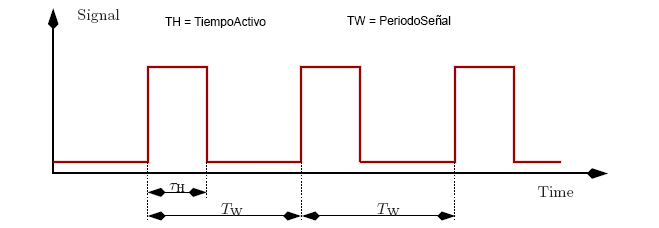
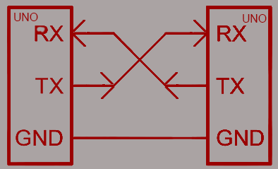
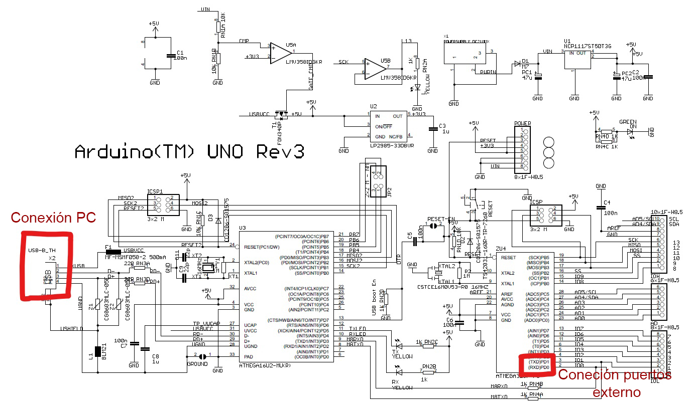
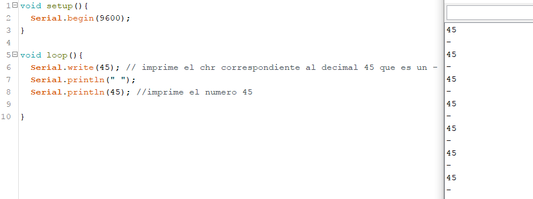
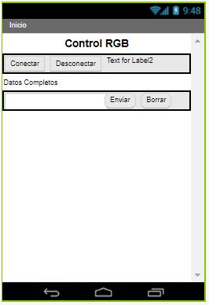
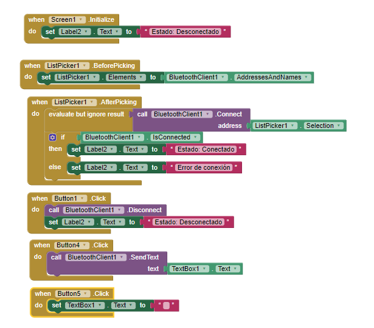

-

Guía 1: Interfaces Seriales
Todo este proyecto se se realizó en base a la asesoría en clase de Sensores y Actuadores I en la carrera de Ingeniería en Diseño de Entreteimiento Digital.
Puedes descargar la carpeta con los códigos finales de esta parte del proyecto. dando click aquí.
ACTIVIDAD 1. LECTURAS
¿Cómo usar los LEDs? Material escrito por la empresa Adafruit. mira la lectura aquí
PWM de Adafruit: mira la lectura aquí
comunicaciones seriales de sparkfun: mira la lectura aquí
Capítulo 2 del texto guía mira la lectura aquí
ACTIVIDAD 2.
En este espacio encontraras las respuestas a las preguntas planteadas en la clase de acuerdo a las lecturas de la actividad anterior.
1. ¿Qué consideraciones debe tener en cuenta para seleccionar un LED?
Lo primero hay que saber es que los leds son muy simples, solo posean dos patas, el CATODO y el ANODO. El CATODO es la pata positiva, lo que significa que a esta se debe conectar la entrada de voltaje positiva y el ANODO es la pata negativa del led. Hay que tener esto muy en cuenta porque los leds solo los podemos conectar de esta forma ya que son diodos y solo reciben el voltaje de una manera. Debemos tener en cuenta es el color y el tamaño que lo necesitamos, debido a que en este momento hay una gran variedad de LED’S en colores y tamaños diferentes. Puedes tener en cuenta a la hora de elegir un LED es el tipo de material con el que está construido y algo muy importante es la cantidad de iluminación que produce;
1. Los LEDs de 5mm son muy brillantes y se utilizan para iluminación
2. Los LEDs de 3mm no son tan brillantes pero pueden servir para dar indicaciones (que algo esté prendido)
3. Los LEDs de 10mm son más grandes que los anteriores pero si de iluminación hablamos son parecidos a los de 5mm.
Para saber mejor sobre lo anterior podemos buscar en la ficha de datos de los LEDs a utilizar su tamaño, intensidad luminosa, longitud de onda (que color es el que emite).
2. Los LEDs pueden llegar a ser un factor muy importante a la hora del diseño de experiencias interactivas debido a que gracias a los diferentes colores y variedad de LEDs podemos llamar la atención de los usuarios, de esta manera podríamos generar indicaciones que los ayuden a orientarse mejor dentro de la experiencia, se pueden utilizar como un medio para decorar los espacios, vitrinas y todo tipo de iluminación colorida que le queramos dar a algo. Con los LEDs también podemos generar imágenes, aparatos que se mueven y generen un trazo con los LEDs todo esto lleno de vida y color gracias al uso de estos.
3.
4. No sería bueno conectar LED directamente a un microcontrolador sin un circuito de acondicionamiento ya que como el circuito de acondicionamiento nos permite proporcionar una alimentación al LED desde el microcontrolador y permite que haya una protección contra las fuentes de voltaje o corriente y sobretensiones. Así que si conectamos un LED a un microcontrolador sin el adecuado circuito de acondicionamiento el LED se dañará si se le sobrepasa el voltaje máximo de funcionamiento.
5. Si tenemos un LED y una resistencia conectados a un microcontrolador, podemos variar la intensidad utilizando resistencias con diferentes valores. Mientras más pequeño sea el valor de la resistencia hace que el LEDs tendrá más brillo debido a que recibe una mayor cantidad de corriente y de sentido contrario mientras más resistencia haya dentro del circuito menor será la corriente y el LED alumbrará menos.
6. Para variar el brillo o intensidad de un LED utilizando una señal de PWM lo único que necesitamos variar es la cantidad de voltaje que le aplicamos al circuito en el que está conectado el LED y la resistencia, de esta manera lograremos que nuestro LED ilumine más poquito si le aplicamos una menor cantidad de voltaje y por otro lado si le aplicamos mucho más voltaje lograremos que nuestro LED ilumine mucho más.
7. Para generar diferentes colores con señales de PWM lo que necesitaremos es tener los tres LED básicos con los cuales se generan el resto de colores. El Rojo, el Verde y el Azul son los tres colores primarios necesarios para la combinación de los colores. Para generar una mescla de colores mejor, desde mi percepción utilizaría un LED RGB, para que puedas notar mejor el cambio de los colores. Ahora que sabemos con que colores trabajaremos, nos falta crear el circuito de acondicionamiento para cada LED, (ó para cada pata si es un LED RGB). Ahora para variar dentro de los colores con señales PWM lo único que tenemos que hacer es variando el voltaje que recibe cada color, por ejemplo, si quiero un color rojo, le entrego una alta cantidad de voltaje a la parte del LED rojo, si nuestro circuito recibe el voltaje a través de un microcontrolador como el Arduino le podemos entregar una señal de 255 en esta pata, ahora si queremos que el color que veamos sea un amarilloso, podemos entregarle voltaje tanto al led Rojo como al verde y así mesclando la cantidad de voltajes para seleccionar el color queramos.
8. El programa del microcontrolador no es igual para un LED de cátodo común o para un LED de ánodo común, esto se debe a que, si tenemos un LED de cátodo común, esté lo podremos controlar desde nuestro microcontrolador desde los pines de PWM, variando el valor de salida de voltaje de 0 a 5 voltios (lo que es igual a variarlo de 0 255 en el Arduino). En el LED de cátodo común, mientras más grande sea el voltaje que le entreguemos al LED más brillará. Por otro lado, si tenemos un LED RGB de ánodo común, este primero que todo cambia un poco su conexión, el ánodo común se conecta a 5V y los otros tres pines a los pines del microcontrolador a través de una resistencia como el LED anterior, pero a la hora de entregarle voltaje desde los pines de PWM mientras mayor sea la señal de salida menor será la diferencia de voltaje, lo que indica que menor es la corriente y esto ocasionará que menos brille, así que si queremos que el LED brille más debemos tener una salida más pequeña.
9. El Duty Cycle se puede entender como la relación que existente entre el tiempo en que una señal se encuentra activa con el periodo de esta señal. Esto se podría simbolizar así: DutyCycle = 100* TiempoActivo/ PeriodoSeñal
10. De acuerdo a la fórmula del punto anterior podemos despejar el periodo de la señal pasándolo a multiplicar al otro lado de la igualdad y pasando a dividir a Duty Cycle al otro lado de la igualdad, quedando así: PeriodoSeñal= TiempoActivo/DutyCycle o mirándolo de otra manera el período es el tiempo en que la señal se demora en cumplir un ciclo, el tiempo en el que ocurre un flanco de subida u otro. Y para hallar la frecuencia lo único que debemos hacer es despejar la fórmula: Frecuencia = 1 / Periodo
11. Si la frecuencia del PWM con la que se controla el LED es muy baja, significaría que el LED podríamos llegarlo a ver prendiendo y apagando, debido a que no se producen muy rápido las oscilaciones. Por otro lado, si la frecuencia del PWM es muy alta, la cantidad de oscilaciones se producen demasiado rápido, tal velocidad nuestro ojo no sería capaz de captarla, por lo que veríamos el led en un mismo estado.
12. La diferencia entre una interfaz paralela y una interfaz serial es que la interfaz paralela transmite sus datos en múltiples bits al mismo tiempo, dando una mejor velocidad a la hora de transmitir los datos, pero teniendo en cuenta que utiliza una mayor cantidad de líneas de entrada y salida, y por el contrario las interfaces serial transmiten sus datos un solo bit a la vez, no es tan rápido pero no requiere ocupar tantas líneas de entrada y salida.
13. La diferencia entre una comunicación serial síncrono y una asíncrona es que la comunicación serial sincrónica como su nombre lo dice está en sincronía, a lo que se refiere esto es que se alinea con un reloj. Por otro lado, una comunicación serial asincrónica indica que los datos que esta transmite no requieren de estar sincronizados con una señal de reloj.
14. Los niveles lógicos son voltajes específicos en el que puede existir una señal; como 0 o 1 o un HIHG o LOW. Ahora los niveles lógicos del microcontrolador ATmega328P están dentro de estos valores, pero hay unos umbral en el que estos valores se cumplen: El primer umbral es para el 1 o HIGH, este umbral para el Arduino Uno es de 3v a 5V, con esto podremos asegurar que se está entregando un 1 o HIGH, el segundo umbral es para el 0 o LOW, este umbral es desde 0V a 1,5V, con este podremos asegurar que estamos entregando un 0 o LOW y por ultimo tenemos un umbral que va desde 1.5V hasta 3V, en este umbral no podemos asegurar que es lo que pueda pasar, debido a que es indeterminado podría ocurrir tanto un 0 o 1.
15. Hay que tener en cuenta a la hora de conectar por medio de una interfaz serial, un microcontrolador que opera a 5V con un sensor o actuador que opera a 3V o 3.3V; primero que todo que sus voltajes de trabajo son muy diferentes, por lo tanto, los niveles lógicos en los que funcionan varían y hay que tener mucho cuidado con eso; debido a que como el Arduino que maneja unos umbrales, cada sensor o actuador también maneja los umbrales propios. Así como los niveles de lógica de 3.3V son (1- HIGH de 2V a 3V y 0- LOW)
16. Los bits de sincronización son los bits que inicio la transmisión de datos y la terminación de esta misma. Los datos son la cantidad de bits que hay en una transmisión, en general la comunicación no siempre se realiza con paquetes de 8 bits, también se envían paquetes de datos con 5, 7 u 8 bits en general la cantidad de información que se envía depende mucho del tipo de información; ASCII estándar tiene un rango de 0 a 127, lo que es igual a 7 bits. Paridad en una comunicación Serial sirve mucho para detectar errores en esta. Existen cuatro maneras diferentes de detectar errores: par, impar, marcada y espaciada. Para paridad par e impar, con el puerto serial se fija el ultimo bit después de los bits de datos para asegurar un estado lógico alto; si la paridad es par el bit de paridad sería 0 y si la paridad es impar entonces el bit de paridad sería 1.
17. El BAUD RATE es la tasa de trasmisión Serial de Símbolos, es decir, la velocidad de transmisión Serial de unidades de señal por segundo. Un ejemplo sería, en la comunicación. PPOR EJEMPLO en Arduino el estándar es un baut rate de 9600.
18. El ENDIAN es el formato en el que se almacenan los datos en una máquina en función de los bits más significativos y los menos significativos. Se transmiten primero los bits de menos importancia, eso si, si no se indica de otra maera.
19. en este punto me nerede.
20.
21.
En esta imagen podemos observar como la parte más izquierda hay un cuadro, este es el puerto USB con el cual el Arduino puede conectarse con el PC y por el otro lado podemos encontrar unos pequeños pines, estos son los de transmisión y recepción de datos con los que el Arduino se puede conectar con otro tipo de microcontroladores, sensores u actuadores.
22. Las comunicaciones seriales TTL existen entre voltajes de un microcontrolador de 0V a 3.3V o 5V; en la cual una señal entre 3.3V y 5v indican un bit con el valor en 1 o un bit de parada y una señal de 0 (GND) representa un bit de inicio o un bit con valor de 0. Por otro lado, las comunicaciones seriales RS-232 se puede encontrar en unos ordenadores más antiguos, es igual a tener el inverso de la señal anterior, los 1 en 0 y los 0 en 1. Otra diferencia es que este protocolo posee señales que oscilan entre -13V y 13V. En estas señales una baja tensión de (-5V, -13V,etc) indica un bit de datos en valor 1 y un bit de señal alta significa un bit de inicio en 0.
23. El UART es un receptor / transmisor asincrónico universal (UART); es el responsable de realizar el envío y transmisión Básicamente es un bloque de circuitos con el que se implementa la comunicación en serie. La UART es el intermediario entre interfaces paralelas y seriales.
24. El primer error es el que es más fácil de cometer es cruzar los cables y conectar el tx de un microcontrolador al tx de un actuador o sensor y de igual modo el rx con el rx, siempre hay que tener en cuenta que debemos cruzar los cables y conectar el tx del microcontrolador al rx del sensor o actuador y el rx al tx. Otro error muy común a la hora de trabajar con conexión serial es utilizar una velocidad de comunicación diferente, esta comunicación es en baudios y hay que tener mucho cuidado con ella porque si los dos dispositivos no se están comunicando a la misma velocidad no serán capaces de entenderse. A demás si conectamos varios dispositivos a la vez en transmisión y recepción de datos, lo más posible es que no te funcione ningún tipo de comunicación. Debido a que tendrías dos transmisores conectados a un mismo receptor que no será capaz de manejar estos datos.
25. Para este proyecto se utilizó un sensor flexible resistivo.
26. El funcionamiento de este sensor es simple, a medida de que el sensor se dobla, la resistencia de este va aumentando a medida de que tanto se doble.
27. Estos tipos de sensores pueden tener muchos usos a la hora de crear interacción, debido a que este sensor que nos permite capturar los que tanto nuestros dedos se doblan; con esto podremos crear una mano robótica o virtual que nos permita interactuar con un ambiente virtual, también nos puede servir para controlar cierto tipo de proyecciones dinámicas al tener que cerrar nuestras manos. Estos son unos ejemplos de los que me imagino que se puede utilizar este sensor, pero aun así hay muchos usos que se le pueden dar a este dispositivo.
28. El método prinln se encarga de imprimir los datos en el puerto serie como un texto ASCII legible para las personas y el write escribe datos binarios en el puerto serial, estos datos se envían como bytes o series de bites.
println y write
29. Lo que se hace para conectar por comunicación serial a processing con Arduino, lo primero que deben hacer es importar la librería de comunicación serial para poder trabajar con serial desde processind. Luego se debe poner a escuchar a processing en el puerto en el que se tiene conectado el Arduino. Luego se leen los bytes que posee un buffer (los bytes de entrada que están llegando del Arduino ) hasta que recibe un salto de línea.
RETO
Esta es la app que construí en app inventor.
Esta imagen a continuación es de la interfaz de la aplicción.
Esta imagen a continuación es el diagrama de bloques que controlan el uso de la aplicación.
Lo que hace esta aplicación es que al principio muestra en el lado superior derecho un texto que muestra el estado de la conexión, primero desconectado, debido a que no se ha realizado ninguna conexión. Luego tenemos dos botones, uno para conectar y el otro para desconectar; el botón de conectar muestra si se tiene el bluethoot encendido los dispositivos que hay con los que se puede conectar la aplicación y el botón de desconectar elimina esas conexiones. Luego tenemos una zona en la que podemos escribir un texto, este texto, es el que debemos enviar por serial para que nuestro Arduino lo comprenda y pueda encender el LED. Tener en cuenta que para que funcione debemos utilizar RGB=#,#,# para poder cambiar el estado de nuestro LED RGB.
En esta imagen a continuación lo que se ve es como estamos probando la comunicación de nuestra aplicación con el modulo bluethoot.

Para controlar el LED se utilizó la aplicación que se había desarrollado anteriormente en la clase para controlar un RGB con por medio de comunicación Serial. Puedes descargar el código dando click aquí.
Para descargar la aplicación movil puedes dar click aquí.
Puedes descargar la lista de chequeo dando click aquí.
Puedes descargar la AutoEvaluación dando click aquí.